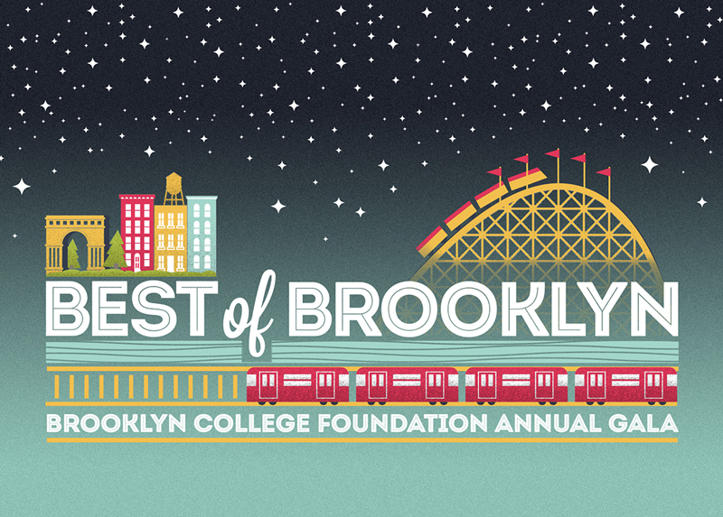

Best of Brooklyn
On Wednesday, May 13, at Tribeca Rooftop, the Brooklyn College Foundation will honor
Edwin H. Cohen ’62
Principal, Prism Capital Partners, LLC Chair, Brooklyn College Foundation
Co-Chairs
Barry R. Feirstein ‘74
Don Kramer ‘58
Chairman and CEO, ILS Capital Management Ltd.
Marge Magner ‘69
Partner, Brysam Global Partners
RSVP online RSVP via printable form
Contact Us
For more information, contact us at:
P: 718.951.5074 F: 718.951.4248 E: bestofbrooklyn@brooklyn.cuny.edu